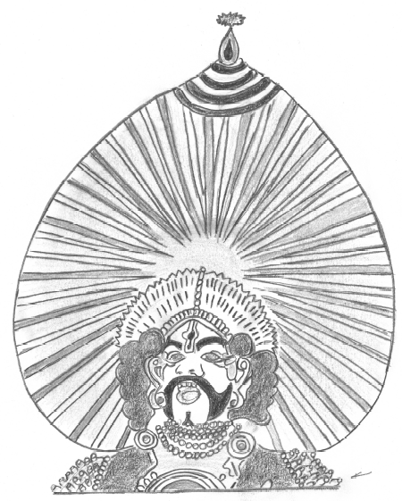
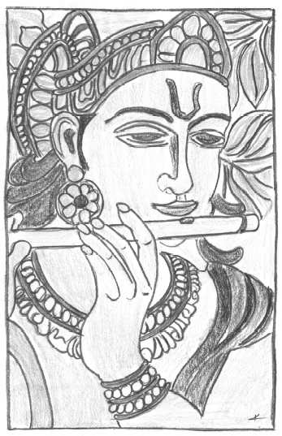
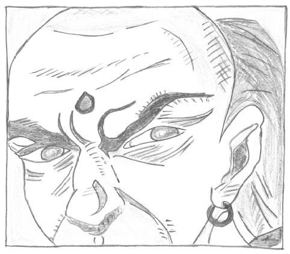
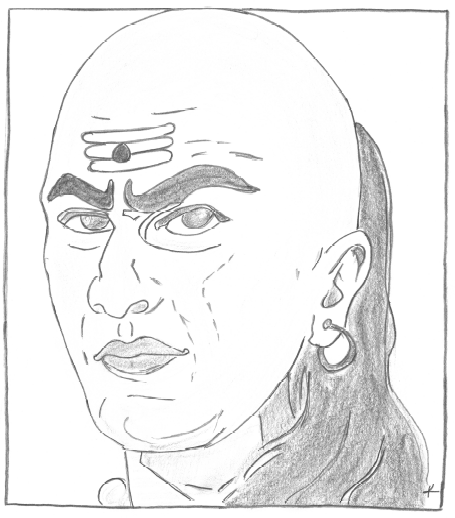
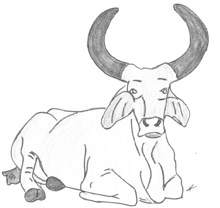

1 / 31
Spanish salsa silo dance
2 / 31
Women in focus
3 / 31

Mexican peasant
4 / 31

Ancient egyptian pharaoh sitting in front fruits and vegetables
5 / 31

Ancient egyptians
6 / 31

Ancient egyptian master holding slaves hair
7 / 28

Ancient egyptian pharaoh
8 / 31

Ancient egyptian god Anubis protector of dead and embalming
9 / 31

Akinator guessing the characters
10 / 31

In beautiful disguises
11 / 31

Odissi dance pose "Looking in the mirror after her shringar"
12 / 31

Indian classic dance pose
13 / 31
O Krishna, you must save me from Durvasa's wrath
14 / 31

Arjuna was overcome with great compassion and sorrowfully said: O Krishna, seeing my kinsmen standing with a desire to fight. The bow, Gaandeeva, slips from my hand and my skin intensely burns. My head turns, I am unable to stand steady and, O Krishnas. I see no use of killing my kinsmen in battle. I desire neither victory nor pleasure nor kingdom, O Krishna. What is the use of the kingdom, or enjoyment, or even life, O Krishna?, in kurukshetra
15 / 31

Krishan preaching Arunja;O Arjuna don't become a coward, O Arjuna. Shake off this weakness of your heart and get up (for the battle), O Arjuna, the Atma that dwells in the body of all (beings) is eternally indestructible. Therefore, you should not mourn for any body.
16 / 31

After krishna's gitopadesha Arunja is ready in the battel of kurukshetra
17 / 31
Duryodhana eager to listen to shakuni's plan to destroy Yudhishthira 's hastinapur
18 / 31

Manuduka-Lucky Astrolger. named after a frog Mandukha has spent his entire life being scorned by everyone around him. So he decided to pretend to a wise astrologer and get people to respect him.
19 / 31
The word Kathakali “Story-Play". It is distinguished by the elaborate makeup and costumes that the performers wear, as well as the symbolic gestures and dance movements.
20 / 31

Yakshagana is a traditional theatre form. The word Yakshagana is derived from two words: Yaksha means Nature's spirit and Gana means Song. It is performed with massive headgears, elaborate facial make-up and vibrant costumes and ornaments.
21 / 31
Yakshagana is a temple art form that depicts mythological stories and puranas.
22 / 31

Lord Krishna, is the eighth avatar of God Vishnu .Lord Krishna's life marks the passing of the Dvapara age and beginning of the Kal yuga (which is also considered as the current age).
23 / 31

Chanakya niti: As soon as the fear approaches near, attack and destroy it.
24 / 31
Chanakya niti: There is some self-intrest behind every friendship. There is no friendship without self-intrest. This is a bitter truth.
25 / 31

Chanakya niti: A man is great by deeds, not by birth.
26 / 31
Chanakya niti: He who lives in our mind is near though he may actually be far away; but he who is not in our heart is far though he may really be nearby.
27 / 31

Ravana king of rakshasas and Lanka, depicted with 10 heads also know as "Dasamukha".
28 / 31
Traditional Japanese sketch.
29 / 31

Nandi is the sacred bull, gatekeeper, and vehicle (vahana) of the Hindu god Shiva.
3- / 31
Ploughing with bulls.
3- / 31

Yama, the lord of death, rides on buffalo. Yama is also the god of righteousness, his tough water buffalo is said to be symbolic of upholding justice.